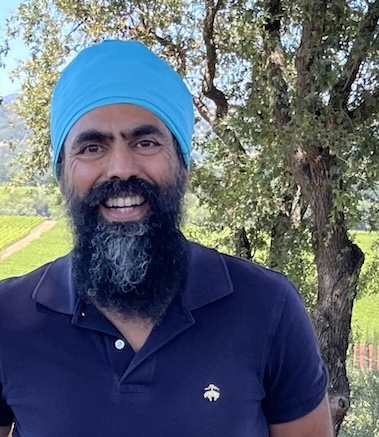

Real food sources of bioavailable nutrients
| # | Food | Protein |
|---|---|---|
| 1 | Greek Yogurt, 1 cup * | 19g |
| 2 | Edamame (soy bean), 1 cup * | 18g |
| 3 | Legumes – Lentils / Black Beans / Chickpeas / Kidney Beans, etc., 1 cup | 16g |
| 4 | Cottage cheese, 1/2 cup * | 13g |
| 5 | Yogurt, 1 cup * | 10g |
| 6 | Tofu, 3 ounces * | 9g |
| 7 | Soy Milk, 1 cup * | 9g |
| 8 | Hemp Hearts, 3 tbsp * | 9g |
| 9 | Amaranth, 1 cup * | 9g |
| 10 | Paneer / Cheddar Cheese / Parmesan / Ricotta / Swiss, 1 ounce * | 8g |
| 11 | Milk (Dairy), 1 cup * | 8g |
| 12 | Pumpkin Seeds, 3 tbsp | 8g |
| 13 | Peanut Butter, 2 tbsp | 8g |
| 14 | Green peas, 1 cup | 8g |
| 15 | Almond Butter, 2 tbsp | 7g |
| 16 | Oats, 1/2 cup | 7g |
* Complete protein
Pair non-heme sources with vitamin C to boost absorption
| Food | Iron |
|---|---|
| Clams (~8) | 23 mg |
| Oysters (~5–7) | 7 mg |
| Mussels (~6–7) | 7 mg |
| Legumes (red lentils, cannellini, kala chana, kidney, garbanzo, pinto), 1 cup | 5–7 mg |
| Grass-Fed Bison (6 oz) | 5.5 mg |
| Pumpkin Seeds, sprouted (4 tbsp) | 4 mg |
| Hemp Hearts (3 tbsp) | 4 mg |
| Swiss Chard (cooked, 1 cup) | 4 mg |
| Blackstrap Molasses (1 tbsp) | 3.6 mg |
| Grass-Fed Beef (6 oz) | 3.5 mg |
| Tofu (3/4 cup) | 3.4 mg |
| Green Moong Dosa (whole, 3/4 cup, 3 dosas) | 3 mg |
| Dark Chocolate (100% cacao, 1 oz) | 3 mg |
| Moong Dal (1 cup) | 2.8 mg |
| Quinoa (1 cup) | 2.8 mg |
| Unhulled Tahini (unhulled sesame seeds, 2 tbsp) | 2.6 mg |
| Collard Greens (sauteed, 1 cup) | 2.5 mg |
| Chia Seed (soaked, 3 tbsp) | 2.3 mg |
| Kale (sauteed, 1 cup) | 1.9 mg |